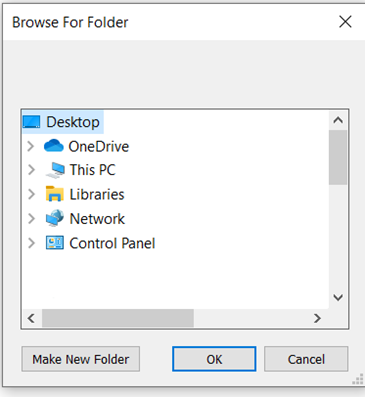

Backup
Click BACKUP button in Home Screen to back up patient files.
BACKUP button can be used when it is desired to back up patient(s) other than back up schedule selected in Utilities. If the patient already exists in the target directory created, you will be asked if you wish to overwrite. This means any test that has the same test date and test number will be overwritten. Data with different test dates and test numbers will be merged with existing data.
